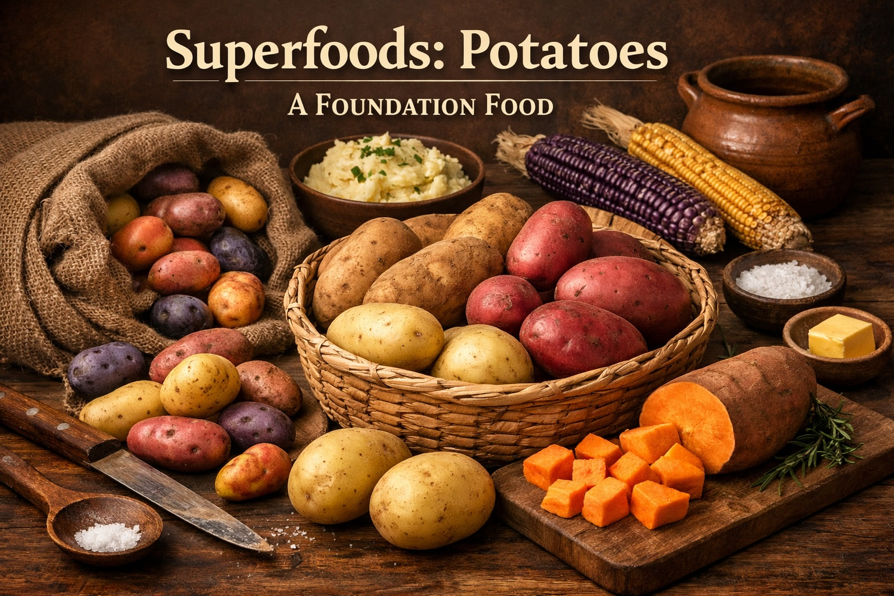

Superfoods: Potatoes — A Foundation Food
Last updated: February 14, 2026

Potatoes have supported human diets for generations because they are affordable, filling, versatile, and easy to prepare under many different conditions. Despite modern criticism of carbohydrates, properly prepared potatoes remain one of the simplest and most practical whole foods for building sustainable meals.
- Potatoes are a true foundation food — affordable, widely available, and naturally satisfying.
- The problem isn’t the potato: deep frying, industrial oils, and ultra‑processed versions change the outcome.
- They deliver real nutrition — especially potassium, vitamin C, fiber (with skin), and steady energy when prepared simply.
- Choose your tool: white potatoes and sweet potatoes are both useful, with slightly different strengths.
Purpose
Help readers understand why potatoes remain a practical foundation food, including how preparation methods influence nutritional outcomes and how potatoes can support affordable, satisfying, whole-food meal systems.
Simple staple foods are often misunderstood
Many traditional staple foods developed negative reputations after becoming associated with ultra-processed industrial versions rather than their simpler whole-food forms.
Potatoes remain valuable because they provide affordable energy, satiety, and useful nutrients in a form that works naturally within practical home cooking.
Why potatoes qualify as a superfood
Potatoes are not trendy. That’s part of their strength. Across cultures and centuries, they’ve functioned as a reliable foundation food: easy to cook, easy to store, and remarkably satisfying. In a modern diet crowded with engineered foods, potatoes are a rare example of a simple ingredient that still delivers real value.
Misunderstood
Potatoes earned a bad reputation largely by association: fries, chips, and fast‑food sides cooked in industrial oils. Whole potatoes are different. They’re naturally filling, and when paired with protein and a little healthy fat, they form a stable, practical meal.
A simple rule
If the potato looks like a factory product, it will behave like one. If it looks like a potato, it will behave like a whole food.
Nutrition profile
Potatoes provide a practical combination: energy + micronutrients + satiety. They’re not “empty carbs.” They’re a real food that happens to be carbohydrate‑forward.
- Potassium: an underrated mineral that supports blood pressure balance, muscle function, and hydration signaling.
- Vitamin C: especially in fresher potatoes; cooking reduces some, but not all.
- Fiber (with skin): supports digestion and steadier glucose response.
- Vitamin B6: involved in energy metabolism and neurotransmitter pathways.
- Resistant starch (especially when cooled): cooked‑then‑cooled potatoes form resistant starch that can support gut health and more stable blood sugar for some people.
Varieties and choosing well
Most grocery stores carry a handful of reliable types. Each is a slightly different tool:
- Russet: best for baking, crisp roasting, and classic mashed potatoes.
- Yukon Gold: creamier texture; great for roasting, mashing, and soups.
- Red potatoes: hold shape well; ideal for boiling, salads, and sheet‑pan meals.
- Fingerlings / small potatoes: fast cooking; excellent roasted with olive oil and salt.
What about sweet potatoes?
Sweet potatoes are not “better” — they’re different. They’re typically richer in beta‑carotene (vitamin A precursor) and have a distinct flavor profile that can reduce the need for added sauces. White potatoes often deliver more potassium. Both belong in a whole‑food kitchen.
Resilience value
From a resilience perspective, potatoes punch above their weight:
- Affordable calories without being nutritionally empty.
- Long shelf life in a cool, dark place.
- Simple preparation — no special equipment required.
- Scales well — one bag can feed a family for multiple meals.
- Versatile across cuisines: roasted, boiled, mashed, stewed, or added to soups.
Preparation matters
The best potato meals are simple. Focus on methods that preserve the whole-food structure and avoid heavy industrial oils.
Best everyday methods
- Roasted: cut into wedges or cubes, toss with extra virgin olive oil and salt, roast until browned.
- Baked: a complete base meal; add protein and a simple topping (Greek yogurt, cheese, or olive oil + salt).
- Boiled / steamed: fast, reliable; finish with olive oil, salt, and herbs.
- Cooked then cooled: use for potato salad or reheat later; this can increase resistant starch.
What to minimize: packaged chips, frozen fries, and restaurant-style deep frying — mostly because of oil quality, repeated heating, and hyper‑palatable engineering.
Who benefits most
- Active people who want a clean carbohydrate source that actually satisfies.
- Families who want affordable meals without relying on processed staples.
- Anyone reducing ultra‑processed foods and rebuilding a simple home cooking routine.
- Budget‑conscious households who still want micronutrient density.
Bottom line
Potatoes are not a hack. They’re a foundation. Prepared simply, they deliver steady fuel, real nutrients, and the kind of satisfaction that makes healthier eating easier to sustain.
Resources
- Harvard Nutrition Source: Potatoes
- Starchy Carbohydrates in a Healthy Diet: The Role of the Humble Potato
Next steps
Continue with other Superfoods articles.
This article focuses on general food quality and metabolic resilience, not medical advice.